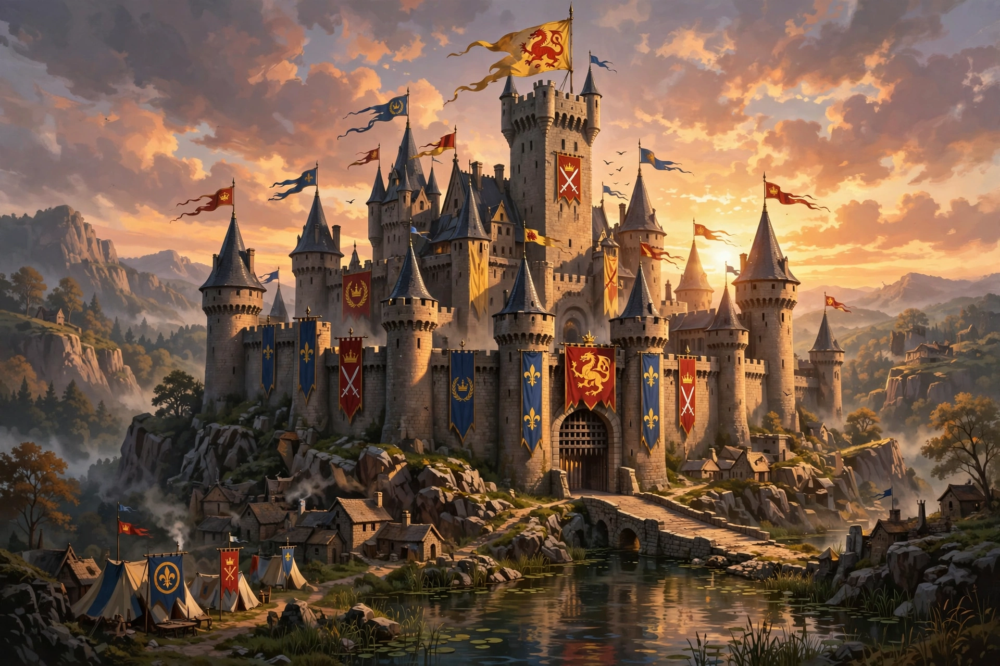

Camelot is a castle and court associated with the legendary King Arthur in Arthurian literature. First mentioned by Chrétien de Troyes in the 12th century, it became, in later romances, Arthur's capital and a symbol of a golden age of chivalry.
| Camelot | |
|---|---|
 | |
| Type | Legendary castle and court |
| Ruler | King Arthur |
Camelot is barely described in early texts; in the 13th-century Vulgate Cycle and Malory's Le Morte d'Arthur it is a great walled city with St Stephen's church, the Round Table, tournaments, and the starting point of the Grail Quest. Its fall follows the adultery of Lancelot and Guinevere and civil war with Mordred.
Writers have identified Camelot with Cadbury Castle in Somerset, Tintagel, Winchester, Colchester (Roman Camulodunum) and many other sites; no identification is historically proven, and Camelot is generally treated as a literary invention. Excavations at Cadbury revealed refortification around Arthur's supposed period.
"Camelot" names the 1960 Lerner and Loewe musical and film, and was famously applied to the administration of US President John F. Kennedy after his widow Jacqueline Kennedy evoked the musical in a 1963 interview.
Recreated from memory.